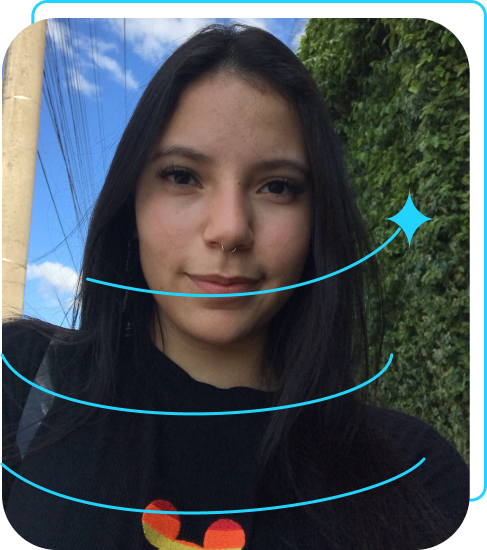

Sobre mim
Olá! Me chamo Érika Souza, mas pode me chamar de Kika. Estou construindo minha carreira na área de tecnologia, com foco em desenvolvimento front-end. Atualmente estudo HTML, CSS e JavaScript por meio da Alura e do Instituto Caldeira, onde venho desenvolvendo projetos práticos e fortalecendo minha base em programação e criação de interfaces.
Este portfólio representa meus primeiros passos na área, reunindo exercícios e projetos desenvolvidos durante meu processo de aprendizado. Aos poucos, ele está sendo evoluído junto com minhas competências. Além da área de tecnologia, também atuo como modelo, o que me ajuda a desenvolver criatividade, presença e atenção aos detalhes, habilidades que também levo para o universo da programação. Tenho interesse em crescimento contínuo, novos projetos e oportunidades onde eu possa evoluir como desenvolvedora e colocar em prática tudo o que venho aprendendo.
